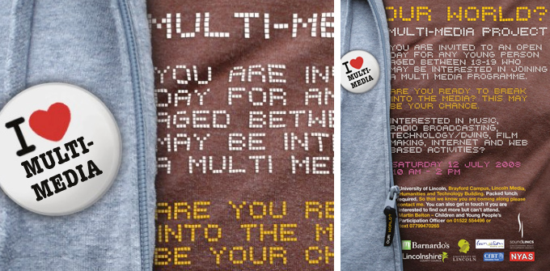

our world? Multi - Media Project 2008
The our world? Initiative was borne out of the desire of Lincolnshire County Council's Participation Officer to offer children in care (13 - 17) the opportunity to build upon an artistic and cultural platform offered to them over a previous six year period.
Having identified a range of artistic and cultural projects through a process of face to face consultation, Lincolnshire County Council and cultural solutions uk generated bespoke programmes addressing the needs and aspirations of the young people in care whilst at the same time ensuring the programme aligned to Lincolnshire County Council's corporate aims and objectives and the five Every Child Matters outcomes.

What the our world? project aimed to achieve
The project was designed to provide multi-media opportunities and solutions for up to 50 young people in care, care leavers and vulnerable groups on the edge of care, to debate, research and enter into appropriate and creative ways of communicating how and where they live in Lincolnshire, a rural county with significant communication challenges. Young people would explore the boundaries of alternative forms of expression using multi-media in a social care context, where potential limitations exist in its application. In so doing, they were provided a voice within the mainstream, a place frequented by the masses and therefore accessible to the general public.
The three outcomes of the project were:
- Provide a level of understanding of how the participating young people can contribute to the public's perception that children in care have the same or similar dreams and aspirations as other young people.
- Provide young people with a set of media skills that will enable them to communicate more effectively and transfer new learning into potential career opportunities through a programme of one-to-one, group and distance learning techniques.
- Provide young people with a new gained confidence by ensuring they have a regular profile within Lincolnshire's mainstream media; this to include content produced by them in county publications, radio broadcasts, cinema and online.
How the our world? project planned to inspire and develop its ideas
Young people in care are prone to a range of negative and harsh experiences, including poverty, abuse, discrimination, disrupted education and a lack of nurture and care. These factors reduce young people's resilience and self belief and can lead to them adopting coping skills that result in risk taking. The project planned to provide young people inspirational opportunities to 'explore their world' through a menu of activities researched, devised and delivered by themselves.
The original ‘menu of activity’ included visits to media studios such as Aardman Animations and the BBC. It was planned for the young people to work alongside media professionals offering them real learning alternatives and in so doing raise aspirations and credibility beyond the project.
OUTCOMES
The young people produced the following:
- A nine track CD of their original compositions
- A 9 minute documentary of the whole programme
- Individual films of their own work
- A multi media DVD